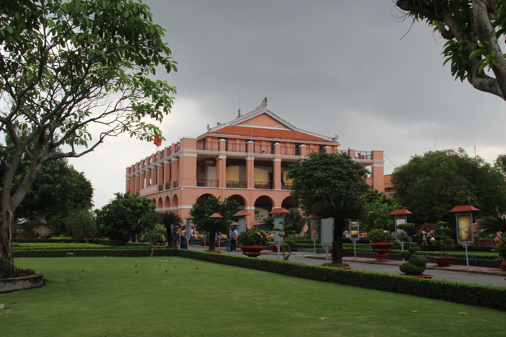

Bến Nhà Rồng, tên chính thức là Bảo tàng Hồ Chí Minh - Chi nhánh Thành phố Hồ Chí Minh, là cụm di tích kiến trúc - bảo tàng nằm bên sông Sài Gòn, thuộc quận 4, Thành phố Hồ Chí Minh. Nơi đây từng là trụ sở của hãng vận tải Messageries maritimes[1] tại Sài Gòn từ năm 1864 đến năm 1955. Ngày nay, địa danh này được biết đến nhiều do tại đây có cụm di tích kiến trúc đánh dấu sự kiện ngày 5 tháng 6 năm 1911, người thanh niên Nguyễn Tất Thành (sau này được biết với tên gọi Hồ Chí Minh) đã xuống con tàu Amiral Latouche Tréville làm phụ bếp để có điều kiện sang châu Âu, mở đầu hành trình cách mạng của mình.
Các Thông tin chi tiết về Bến Nhà Rồng
Bến Nhà Rồng tọa lạc ở Địa chỉ:1 Nguyễn Tất Thành, Phường 12, Quận 4
Các Tên gọi khác:
"Nhà Rồng" có nghĩa là "Gia Long" được người Pháp đặt để nhớ tới quan hệ của vua Gia Long với nước Pháp.
Sở Ông Năm, vì tòa nhà do viên quan năm Pháp Domergue đứng ra chủ trì xây dựng.
Sở Canh tuần tàu biển, vì từ sau năm 1865 khi cột cờ Thủ Ngữ được xây dựng, có treo cờ hiệu giúp tàu thuyền ra vào cảng thuận tiện.
Một số hình ảnh tiêu biểu về Bến Nhà Rồng:
|


|